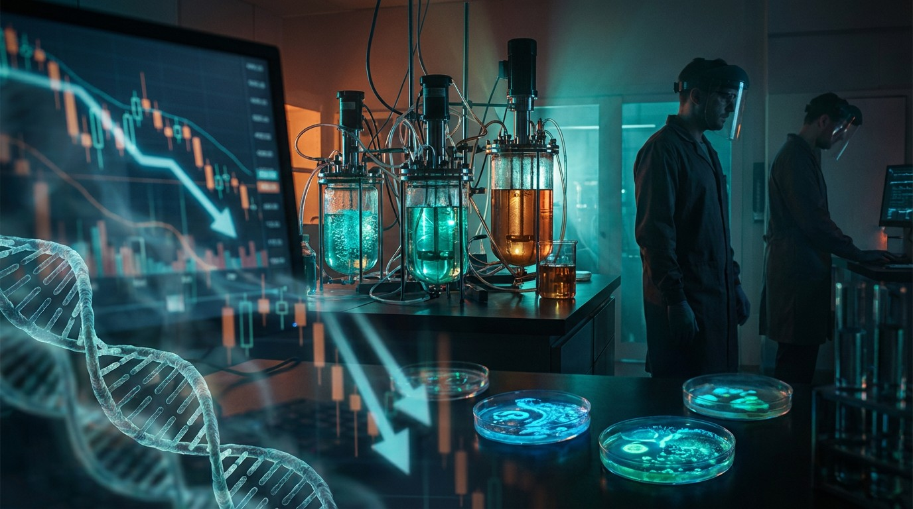

Synthetic Biology Burned $40 Billion. The Organisms Don't Care.
Ginkgo Bioworks went from a $15 billion valuation to pennies. Amyris filed bankruptcy after raising $3 billion. Zymergen is gone. Bolt Threads is gone. And venture capital just poured $12.2 billion back in. What the stock tickers missed.

Amyris developed nearly a dozen products from engineered yeast — squalane for cosmetics, farnesene for jet fuel, artemisinin for antimalarial drugs. The biology worked. Each fermentation run produced exactly what the company's synthetic pathways were designed to produce. In August 2023, Amyris filed for Chapter 11 bankruptcy protection with over $1 billion in funded debt, having burned through approximately $3 billion in lifetime capital.
Jay Keasling, the UC Berkeley synthetic biologist who co-founded Amyris in 2003, attributed the collapse to "an overabundance of ideas fueled by mountains of investor cash, leading to a lack of focus." That diagnosis — brilliant platform, fatal diffusion — applies to nearly every major synbio casualty of the past three years.
The organisms kept doing their jobs. The companies couldn't do theirs.
The Casualty List
Between 2021 and 2025, the publicly traded synthetic biology sector destroyed more than $40 billion in market capitalization. Not gradually. Catastrophically.
| Company | Peak Valuation | Current Status | Capital Raised | What Happened |
|---|---|---|---|---|
| Ginkgo Bioworks | ~$15B (SPAC, 2021) | Delisted from NYSE, Dec 2024. Trading OTC. | $2.8B+ | Platform-as-a-service model failed to generate sustainable revenue. Acquired Zymergen for ~$300M. Massive dilution. |
| Amyris | ~$5.4B (2021 peak) | Chapter 11 bankruptcy, Aug 2023. Brands sold off. | ~$3B lifetime | Dozen simultaneous product lines, none reaching profitability. $1.06B in secured/unsecured debt at filing. |
| Zymergen | $3.1B (IPO, Apr 2021) | Acquired by Ginkgo for ~$300M, then absorbed. | $1.5B+ | Flagship product Hyaline (plastic film) had undisclosed technical issues. Stock fell 70% in one day on earnings warning. |
| Bolt Threads | $1.2B+ (private) | Shut down, Jan 2024. | $700M+ | Mylo mycelium leather couldn't scale to price-competitive volumes despite Adidas, Stella McCartney partnerships. |
| Synlogic | ~$800M (peak) | Shut down clinical programs, 2024. | $100M+ | Engineered bacteria for metabolic diseases couldn't clear Phase 2 efficacy hurdles. |
Combined peak valuations: north of $25 billion. Combined capital raised: over $8 billion. Combined profitable quarters: zero.
The Biology Was Never the Problem
This is the part that makes the synbio collapse different from, say, the dotcom bust or the crypto winter. The underlying technology demonstrably works.
Amyris's engineered Saccharomyces cerevisiae strains produced squalane at industrial scale. The fermentation yields were real. Ginkgo's cell programming platform has run tens of thousands of genetic designs through its automated foundries — the throughput claims are not vaporware. Bolt Threads grew mycelium into leather-like sheets that Stella McCartney actually put on a runway. Zymergen's molecular engineering produced novel materials with measurable, verifiable properties.
The failures were commercial, not scientific:
- Unit economics. Engineered organisms producing commodity chemicals can't compete on cost with petroleum when oil is $70/barrel and your fermentation facility cost $200 million to build.
- Scale-up gap. Lab-bench yields and 10,000-liter fermenter yields are different universes. Zymergen's Hyaline film worked at bench scale; manufacturing-scale defect rates made it commercially unviable.
- SPAC-era valuation insanity. Ginkgo went public via SPAC at a $15 billion valuation on $77 million in trailing revenue. That's a 195x revenue multiple for a company selling picks-and-shovels to an industry that barely existed.
- Platform sprawl. Amyris tried to be a cosmetics company, a fuel company, a fragrance company, a sweetener company, and a flavors company simultaneously. Keasling's "overabundance of ideas" critique was generous — it was strategic incoherence funded by cheap capital.
The Quiet Survivors
While the SPAC casualties dominated headlines, a different cohort of synbio companies kept building. They share a pattern: narrow product focus, real revenue, and tolerance for being boring.
Solugen turned an idle polyethylene wax plant in Houston into what it calls a "Bioforge" — an enzyme-driven chemical production facility. In 2024, the U.S. Department of Energy granted Solugen a $213.6 million loan, the largest government biomanufacturing loan since Biden's 2022 executive order to expand the bioeconomy. Their revenue comes from selling organic acids to oil and gas companies for iron remediation — not glamorous, but the invoices clear.
Pivot Bio just launched its third-generation nitrogen-fixing microbial product line (PROVEN G3) with patent-protected gene-editing technology. Peer-reviewed validation in major agricultural journals. The company engineers soil microbes that pull nitrogen from the atmosphere to feed crops, replacing a fraction of synthetic fertilizer — a $100 billion global market where even a 5% substitution rate is massive.
Mammoth Biosciences — co-founded by Nobel laureate Jennifer Doudna — is developing next-generation CRISPR diagnostics and therapeutics, staying focused on the detection platform rather than trying to become a vertically integrated drug company.
The difference between the dead and the living? The survivors picked one problem and solved it at a price someone would pay. The casualties tried to be platforms for everything.
$12.2 Billion Says the Market Disagrees With the Obituaries
According to SynBioBeta's 2024 Investment Report, venture capital investment in synthetic biology reached $12.2 billion in 2024, up from $10.7 billion in 2023 and driven by a standout fourth quarter. The dataset covers over 900 synbio companies and more than 12,000 individual investments.
The capital isn't flowing back to where it burned. The allocation has shifted sharply:
| Sector | 2024 VC Investment | Trend |
|---|---|---|
| AI-driven protein design | $4.1B | ↑ Fastest-growing subsector |
| Therapeutics (cell & gene therapy) | $3.2B | ↑ Steady growth, Casgevy-driven interest |
| Microbial engineering | $2.8B | ↑ Agriculture & industrial chemicals focus |
| Bioinformatics / tools | $1.3B | → Stable |
| Materials / consumer products | $0.8B | ↓ Down ~60% from 2021 peak |
The collapse of materials and consumer-product synbio — the sector that Amyris, Bolt Threads, and Zymergen all occupied — didn't kill investor appetite. It redirected it. Money moved from "replace petroleum with yeast" toward "design proteins with AI" and "manufacture mRNA at scale."
The mRNA Proof Case
The single most important data point in synthetic biology's favor has nothing to do with any of the companies that failed.
BioNTech and Moderna's COVID-19 mRNA vaccines — built on synthetic biology's core capabilities of nucleic acid design, lipid nanoparticle engineering, and programmable biological manufacturing — generated combined revenues exceeding $60 billion between 2021 and 2023. Pfizer alone reported $37 billion in Comirnaty revenue in 2022.
This is what synbio looks like when the product fits the manufacturing economics. mRNA vaccines don't compete with petroleum on cost-per-ton. They compete with traditional vaccine development on speed and programmability — and win by orders of magnitude. BioNTech designed its vaccine candidate in January 2020, days after receiving the SARS-CoV-2 genetic sequence. The first clinical trial dosed patients in April. FDA authorization came in December.
Ten months from sequence to syringe. That timeline was a synthetic biology achievement. The stock market just didn't call it that.
The CDMO Consolidation Signal
Perhaps the strongest indicator that synbio manufacturing has crossed a commercial threshold: the people buying production capacity are not startups raising Series B rounds. They're the world's largest pharmaceutical companies.
In February 2024, Novo Holdings — parent of Novo Nordisk, the world's most valuable pharmaceutical company — announced the acquisition of Catalent, a contract development and manufacturing organization (CDMO), for $16.5 billion. The deal's purpose: securing fill-finish manufacturing capacity for GLP-1 agonists (Ozempic, Wegovy). The European Commission approved it in December 2024.
That $16.5 billion is more than the entire synbio SPAC cohort was worth at peak — and it was spent on manufacturing infrastructure, not platform technology. Lonza, Samsung Biologics, and dozens of smaller CDMOs are expanding biological production facilities globally. When the contract manufacturers are building out capacity, the technology argument is settled. What remains is the business model question.
The Global Market, Carefully Sourced
Market sizing in synthetic biology is notoriously inconsistent because nobody agrees on what counts. Precedence Research pegs the global market at $20 billion in 2024, growing to $149 billion by 2033 at a 25% CAGR. Grand View Research estimates $16.4 billion in 2023. MarketsandMarkets says $79 billion in 2024 (using a broader technology-platform definition).
Pick your source and the number varies fivefold. What doesn't vary: every major analyst group projects double-digit compound annual growth through at least 2030, and the growth is concentrated in therapeutics and agriculture, not consumer products.
The honest framing: the synbio market is somewhere between $15 and $80 billion depending on definitional boundaries, and the companies generating real revenue are disproportionately in drug development, agricultural biologicals, and industrial enzyme production — not in the "replace everything with biology" vision that raised billions in 2020–2021.
What the Graveyard Teaches
Synthetic biology's economic reckoning is instructive because the pattern will repeat in other deep-tech sectors. Quantum computing, fusion energy, autonomous vehicles — all face the same gap between "the physics works" and "the business model works."
The lessons from the synbio graveyard:
One. A working prototype at lab scale is not evidence of commercial viability. Zymergen proved this at a cost of $1.5 billion.
Two. Platform companies without killer apps die. Ginkgo's "we'll program cells for anyone" model required an ecosystem of customers who knew what to order from a cell programming platform. That ecosystem didn't exist in 2021. It barely exists now.
Three. Competing with petroleum on cost requires either (a) regulatory mandates that make petroleum more expensive, or (b) products where biology offers capabilities petroleum cannot match. Category (b) is where the survivors live — pharmaceuticals, agricultural nitrogen fixation, diagnostic enzymes. Category (a) is where policy has been unreliable.
Four. The SPAC vehicle was particularly toxic for deep-tech companies. Forward revenue projections in SPAC decks were fantasy. Ginkgo's $15 billion valuation required revenue growth trajectories that had no basis in manufacturing reality.
Five. The technology diffuses even when the companies fail. Amyris's artemisinin work — engineering yeast to produce a precursor to the world's most important antimalarial drug — is now the basis for a WHO-supported semi-synthetic artemisinin supply chain. The company died. The microbes are still producing.
🧬 The Reckoning
Synthetic biology in 2026 is a field that has been right about the science and wrong about the business model — repeatedly, expensively, and with $40 billion in shareholder capital to show for the lesson. The organisms engineered by Amyris, Ginkgo, and Zymergen still produce what they were designed to produce. The strains didn't fail. The cap tables did. Venture capital's $12.2 billion bet in 2024 suggests the industry has absorbed the lesson — money is flowing toward narrow, defensible applications with actual unit economics instead of toward platforms promising to reprogram all of biology. Whether that discipline holds when the next hype cycle arrives is, clinically speaking, an open question.
Sources & References
- Amyris Chapter 11 Filing — Debtwire/ION Analytics. Case profile: $1.06B secured/unsecured funded debt, $190M DIP financing. August 2023.
- Jay Keasling — Co-founder of Amyris — Wikipedia. Amyris founded July 2003 by Keasling, Newman, Reiling, Renninger, and Martin from UC Berkeley and Lawrence Berkeley National Laboratory.
- Keasling, J. — "overabundance of ideas fueled by mountains of investor cash" — quoted in The Current State and Future Prospects of Synthetic Biology, Medicine.net.
- Zymergen Acquired by Ginkgo for ~$300M — Fierce Biotech. Market capitalization at acquisition: $300M, down from $3.1B at April 2021 IPO.
- Zymergen Acquisition Terms — ASK LLP case study. 0.9179 Ginkgo shares per Zymergen share; continued cost restructuring and headcount reductions.
- Bolt Threads Shutdown — The Circular People, January 2024. Mylo mycelium leather program shuttered.
- SynBioBeta 2025 Synthetic Biology Investment Report — Data from 900+ companies and 12,000+ investments. 2024 venture investment: $12.2B, up from $10.7B in 2023.
- SynBioBeta 2024 Investment Report — Sector breakdown: therapeutics $3.2B, AI-driven protein design $4.1B, microbial engineering $2.8B (PitchBook 2024 data).
- Solugen Profile — TexAU — DOE $213.6M biomanufacturing loan (largest since 2022 executive order). Revenue from organic acids for oil/gas iron remediation.
- Rise of the Bioforge — Ethanol Producer Magazine. Solugen's repurposed polyethylene wax facility in Houston.
- Pivot Bio — Peer-Reviewed Validation — Pivot Bio press release, 2025. PROVEN G3 third-generation nitrogen microbial product with patent-protected gene-editing.
- CDMOs: The Movers and Shakers of 2024 — DCAT Value Chain Insights. Novo Holdings' $16.5B Catalent acquisition. European Commission approval December 6, 2024.
- Novo Holdings Completes Acquisition of Catalent — Catalent press release. Three fill-finish sites (Anagni, Bloomington, Brussels) sold to Novo Nordisk for $11B.
- COVID-19 mRNA Vaccines and the Limitless Potential of mRNA Technology — University of Chicago Triple Helix, January 2025. Pfizer Comirnaty revenue: $37B in 2022.
- Synthetic Biology Statistics 2025 — Sci-Tech Today. Market size estimates: Precedence Research ($20.01B in 2024, $148.93B by 2033 at 25% CAGR). MarketsandMarkets ($79.39B broader definition).
- Amyris Financials — CB Insights. Stock price, funding rounds, and valuation history.